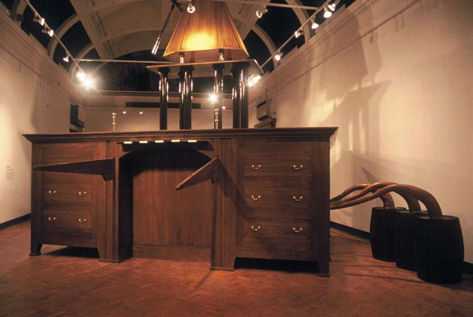

CONSTRUIRE LA PEUR
En 2002, Rod Dickinson, un artiste britannique va recréer
avec précision la Air loom décrite par Matthews. Cette
installation imposante de 7 mètres de hauteur pour 10 mètres
d'envergure, construite en chêne, laiton et cuivre aura
donné vie à la psychose de Matthew 2 siècles après sa mise
en lumière. Cette oeuvre est depuis 2016 exposé au
Bethlem museum of the mind.

Image de la machine de Rod Dickinson (2002)
La lourdeur de cette œuvre se ressent même à travers les
photos. Savoir qu'elle matérialise le délire paranoïaque
de quelqu'un permet d'effleurer la souffrance des
personnes atteintes de schizophrénie. On prend
tristement conscience du déni dans lequel se trouvait
Matthews, comme tant d'autres malades atteints de cette
pathologie. Rejeter le diagnostic et attribuer sa
souffrance à des complots gouvernementaux ou à des
attaques d'ennemis est une réaction courante chez ces
patients. Un autre cas marquant, similaire à celui de
Matthews, est celui de
Jakob Mohr, qui a également illustré ses délires à travers des
dessins. Cette œuvre permet aussi de constater la
précision avec laquelle Matthews a décrit la machine.
Trop souvent, les personnes atteintes de maladies
mentales sont considérées comme trop différentes, trop
aliénées ou trop retardées pour faire partie de notre
société. Pourtant, cette œuvre rappelle l'humanité de
ceux qui souffrent de telles affections. Elle cherche à
déconstruire les clichés et stéréotypes que nous avons
vis-à-vis de ces pathologies, pour mieux les accepter en
tant qu'êtres humains, et non simplement comme des
malades ou des fous. Pour conclure sur une note de
culture générale, je recommande le film "Vol au-dessus d'un nid de coucou" de Milos Forman. Ce film touchant traite des maladies
mentales avec beaucoup de justesse, et il est d'ailleurs
question dans le livre original d'une machine
d'influence, décrite par l'un des personnages du roman.